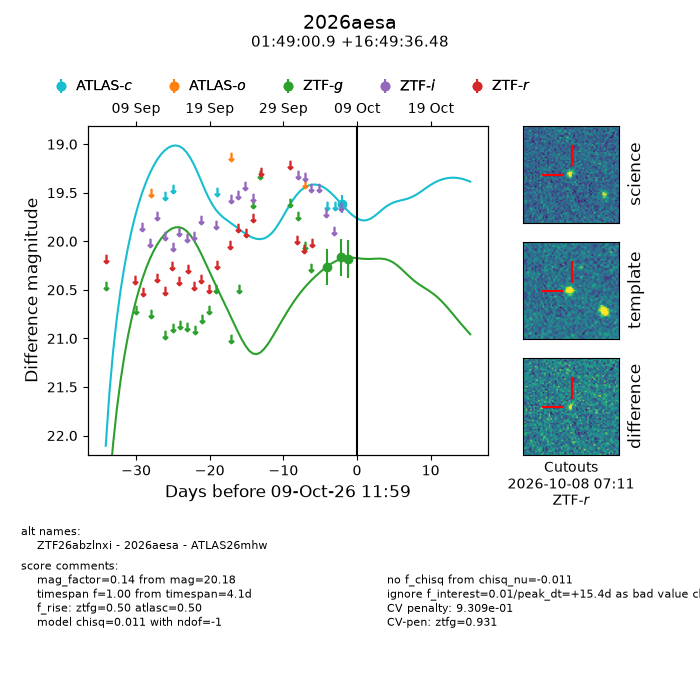
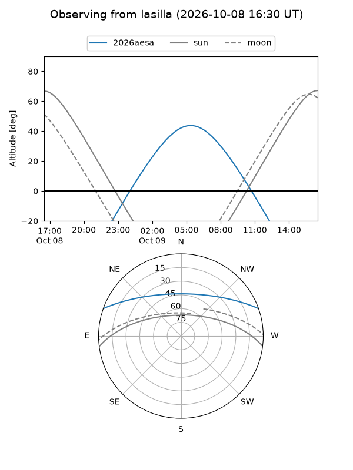
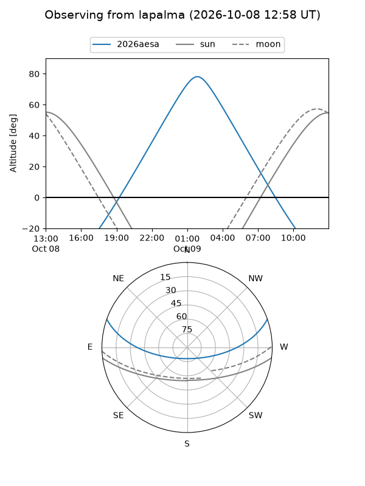
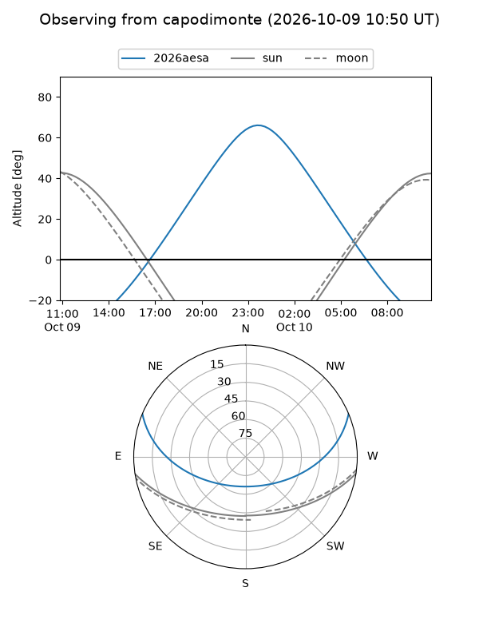
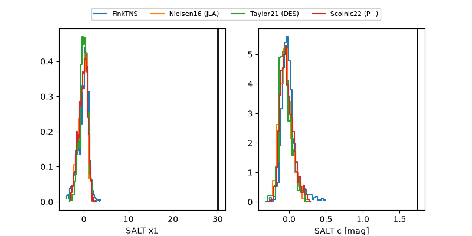

2026aesa
Target 2026aesa at 2026-10-09 12:01
Aliases and brokers:
FINK-ZTF: ztf.fink-portal.org/ZTF26abzlnxi
Lasair-ZTF: lasair-ztf.lsst.ac.uk/objects/ZTF26abzlnxi
ALeRCE-ZTF: alerce.online/object/ZTF26abzlnxi
YSE-PZ: ziggy.ucolick.org/yse/transient_detail/2026aesa
TNS name: wis-tns.org/object/2026aesa
Direct TNS query: direct search
alt names
ZTF26abzlnxi (ztf,fink_ztf)
2026aesa (tns,yse)
ATLAS26mhw (atlas)
Coordinates:
equatorial (ra, dec) = 27.2540,+16.82680
equatorial (HMS+DMS) = 01:49:00.95,+16:49:36.48
galactic (l, b) = (142.2081,-43.87930)
Flags:
peak dt: +15.4
likely cv: !!
Photometry:
last atlasc=19.62, ztfg=20.18
1 atlasc, 3 ztfg detections
Lightcurve

Visibility



Additional plots
